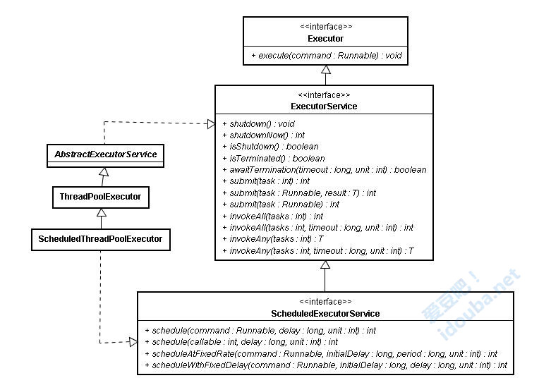

戏（细）说Executor框架线程池任务执行全过程（上）
归档下发表于infoq.com 2015年6月的两篇文章。本来是一篇文章，经过Infoq编辑Alice Ding建议，拆分为<上>和<下>两部分。谢谢Alice对文章的细心校对，帮我发下了其中的很多问题。添加下infoq要求的声明：本文为InfoQ中文站特供稿件，首发地址为：http://www.infoq.com/cn/articles/executor-framework-thread-pool-task-execution-part-01。如需转载，请与InfoQ中文站联系。
内容综述
基于Executor接口中将任务提交和任务执行解耦的设计，ExecutorService和其各种功能强大的实现类提供了非常简便方式来提交任务并获取任务执行结果，封装了任务执行的全部过程。本文尝试通过对j.u.c.下该部分源码的解析以ThreadPoolExecutor为例来追踪任务提交、执行、获取执行结果的整个过程。为了避免陷入枯燥的源码解释，将该过程和过程中涉及的角色与我们工作中的场景和场景中涉及的角色进行映射，力图生动和深入浅出。
一、前言
1.5后引入的Executor框架的最大优点是把任务的提交和执行解耦。要执行任务的人只需把Task描述清楚，然后提交即可。这个Task是怎么被执行的，被谁执行的，什么时候执行的，提交的人就不用关心了。具体点讲，提交一个Callable对象给ExecutorService（如最常用的线程池ThreadPoolExecutor），将得到一个Future对象，调用Future对象的get方法等待执行结果就好了。
经过这样的封装，对于使用者来说，提交任务获取结果的过程大大简化，调用者直接从提交的地方就可以等待获取执行结果。而封装最大的效果是使得真正执行任务的线程们变得不为人知。有没有觉得这个场景似曾相识？我们工作中当老大的老大（且称作LD^2）把一个任务交给我们老大（LD）的时候，到底是LD自己干，还是转过身来拉来一帮苦逼的兄弟加班加点干，那LD^2是不管的。LD^2只用把人描述清楚提及给LD，然后喝着咖啡等着收LD的report即可。等LD一封邮件非常优雅地报告LD^2report结果时，实际操作中是码农A和码农B干了一个月，还是码农ABCDE加班干了一个礼拜，大多是不用体现的。这套机制的优点就是LD^2找个合适的LD出来提交任务即可，接口友好有效，不用为具体怎么干费神费力。
二、 一个最简单的例子
看上去这个执行过程是这个样子。调用这段代码的是老大的老大了，他所需要干的所有事情就是找到一个合适的老大（如下面例子中laodaA就荣幸地被选中了），提交任务就好了。
// 一个有7个作业线程的线程池，老大的老大找到一个管7个人的小团队的老大
ExecutorService laodaA = Executors.newFixedThreadPool(7);
//提交作业给老大，作业内容封装在Callable中，约定好了输出的类型是String。
String outputs = laoda.submit(
new Callable<String>() {
public String call() throws Exception
{
return "I am a task, which submited by the so called laoda, and run by those anonymous workers";
}
//提交后就等着结果吧，到底是手下7个作业中谁领到任务了，老大是不关心的。
}).get();
System.out.println(outputs);
使用上非常简单，其实只有两行语句来完成所有功能：创建一个线程池，提交任务并等待获取执行结果。
例子中生成线程池采用了工具类Executors的静态方法。除了newFixedThreadPool可以生成固定大小的线程池，newCachedThreadPool可以生成一个无界、可以自动回收的线程池，newSingleThreadScheduledExecutor可以生成一个单个线程的线程池。newScheduledThreadPool还可以生成支持周期任务的线程池。一般用户场景下各种不同设置要求的线程池都可以这样生成，不用自己new一个线程池出来。
三、代码剖析
这套机制怎么用，上面两句语句就做到了，非常方便和友好。但是submit的task是怎么被执行的？是谁执行的？如何做到在调用的时候只有等待执行结束才能get到结果。这些都是1.5之后Executor接口下的线程池、Future接口下的可获得执行结果的的任务，配合AQS和原有的Runnable来做到的。在下文中我们尝试通过剖析每部分的代码来了解Task提交，Task执行，获取Task执行结果等几个主要步骤。为了控制篇幅，突出主要逻辑，文章中引用的代码片段去掉了异常捕获、非主要条件判断、非主要操作。文中只是以最常用的ThreadPoolExecutor线程池举例，其实ExecutorService接口下定义了很多功能丰富的其他类型，有各自的特点，但风格类似。本文重点是介绍任务提交的过程，过程中涉及的ExecutorService、ThreadPoolExecutor、AQS、Future、FutureTask等只会介绍该过程中用到的内容，不会对每个类都详细展开。
1、 任务提交
从类图上可以看到，接口ExecutorService继承自Executor。不像Executor中只定义了一个方法来执行任务，在ExecutorService中，正如其名字暗示的一样，定义了一个服务，定义了完整的线程池的行为，可以接受提交任务、执行任务、关闭服务。抽象类AbstractExecutorService类实现了ExecutorService接口，也实现了接口定义的默认行为。

AbstractExecutorService任务提交的submit方法有三个实现。第一个接收一个Runnable的Task，没有执行结果；第二个是两个参数：一个任务，一个执行结果；第三个一个Callable，本身就包含执任务内容和执行结果。 submit方法的返回结果是Future类型，调用该接口定义的get方法即可获得执行结果。V get() 方法的返回值类型V是在提交任务时就约定好了的。
除了submit任务的方法外，作为对服务的管理，在ExecutorService接口中还定义了服务的关闭方法shutdown和shutdownNow方法，可以平缓或者立即关闭执行服务，实现该方法的子类根据自身特征支持该定义。在ThreadPoolExecutor中，维护了RUNNING、SHUTDOWN、STOP、TERMINATED四种状态来实现对线程池的管理。线程池的完整运行机制不是本文的重点，重点还是关注submit过程中的逻辑。
- 看AbstractExecutorService中代码提交部分，构造好一个FutureTask对象后，调用execute()方法执行任务。我们知道这个方法是顶级接口Executor中定义的最重要的方法。。FutureTask类型实现了Runnable接口，因此满足Executor中execute()方法的约定。同时比较有意思的是，该对象在execute执行后，就又作为submit方法的返回值返回，因为FutureTask同时又实现了Future接口，满足Future接口的约定。
public <T> Future<T> submit(Callable<T> task) {
if (task == null) throw new NullPointerException();
RunnableFuture<T> ftask = newTaskFor(task);
execute(ftask);
return ftask;
}
- Submit传入的参数都被封装成了FutureTask类型来execute的，对应前面三个不同的参数类型都会封装成FutureTask。
protected <T> RunnableFuture<T> newTaskFor(Callable<T> callable) {
return new FutureTask<T>(callable);
}
- Executor接口中定义的execute方法的作用就是执行提交的任务，该方法在抽象类AbstractExecutorService中没有实现，留到子类中实现。我们观察下子类ThreadPoolExecutor，使用最广泛的线程池如何来execute那些submit的任务的。这个方法看着比较简单，但是线程池什么时候创建新的作业线程来处理任务，什么时候只接收任务不创建作业线程，另外什么时候拒绝任务。线程池的接收任务、维护工作线程的策略都要在其中体现。
//任务队列
private final BlockingQueue<Runnable> workQueue;
//作业线程集合
private final HashSet<Worker> workers = new HashSet<Worker>();
其中阻塞队列workQueue是来存储待执行的任务的，在构造线程池时可以选择满足该BlockingQueue 接口定义的SynchronousQueue、LinkedBlockingQueue或者DelayedWorkQueue等不同阻塞队列来实现不同特征的线程池。
关注下execute(Runnable command)方法中调用到的addIfUnderCorePoolSize，workQueue.offer(command) ， ensureQueuedTaskHandled(command)，addIfUnderMaximumPoolSize(command)这几个操作。尤其几个名字较长的private方法，把方法名的驼峰式的单词分开，加上对方法上下文的了解就能理解其功能。
因为前面说到的几个方法在里面即是操作，又返回一个布尔值，影响后面的逻辑，所以不大方便在方法体中为每条语句加注释来说明，需要大致关联起来看。所以首先需要把execute方法的主要逻辑说明下，再看其中各自方法的作用。
- 如果线程池的状态是RUNNING，线程池的大小小于配置的核心线程数，说明还可以创建新线程，则启动新的线程执行这个任务。
- 如果线程池的状态是RUNNING ，线程池的大小小于配置的最大线程数，并且任务队列已经满了，说明现有线程已经不能支持当前的任务了，并且线程池还有继续扩充的空间，就可以创建一个新的线程来处理提交的任务。
- 如果线程池的状态是RUNNING，当前线程池的大小大于等于配置的核心线程数，说明根据配置当前的线程数已经够用，不用创建新线程，只需把任务加入任务队列即可。如果任务队列不满，则提交的任务在任务队列中等待处理；如果任务队列满了则需要考虑是否要扩展线程池的容量。
- 当线程池已经关闭或者上面的条件都不能满足时，则进行拒绝策略，拒绝策略在RejectedExecutionHandler接口中定义，可以有多种不同的实现。
上面其实也是对最主要思路的解析，详细展开可能还会更复杂。简单梳理下思路：构建线程池时定义了一个额定大小，当线程池内工作线程数小于额定大小，有新任务进来就创建新工作线程，如果超过该阈值，则一般就不创建了，只是把接收任务加到任务队列里面。但是如果任务队列里的任务实在太多了，那还是要申请额外的工作线程来帮忙。如果还是不够用就拒绝服务。这个场景其实也是每天我们工作中会碰到的场景。我们管人的老大，手里都有一定HC（Head Count），当上面老大有活分下来，手里人不够，但是不超过HC，我们就自己招人；如果超过了还是忙不过来，那就向上门老大申请借调人手来帮忙；如果还是干不完，那就没办法了，新任务咱就不接了。
public void execute(Runnable command) {
if (command == null)
throw new NullPointerException();
if (poolSize >= corePoolSize || !addIfUnderCorePoolSize(command)) {
if (runState == RUNNING && workQueue.offer(command)) {
if (runState != RUNNING || poolSize == 0)
ensureQueuedTaskHandled(command);
}
else if (!addIfUnderMaximumPoolSize(command))
reject(command); // is shutdown or saturated
}
}
- addIfUnderCorePoolSize方法检查如果当前线程池的大小小于配置的核心线程数，说明还可以创建新线程，则启动新的线程执行这个任务。
private boolean addIfUnderCorePoolSize(Runnable firstTask) {
Thread t = null;
//如果当前线程池的大小小于配置的核心线程数，说明还可以创建新线程
if (poolSize < corePoolSize && runState == RUNNING)
// 则启动新的线程执行这个任务
t = addThread(firstTask);
return t != null;
}
- 和上一个方法类似，addIfUnderMaximumPoolSize检查如果线程池的大小小于配置的最大线程数，并且任务队列已经满了（就是execute方法试图把当前线程加入任务队列时不成功），说明现有线程已经不能支持当前的任务了，但线程池还有继续扩充的空间，就可以创建一个新的线程来处理提交的任务。
private boolean addIfUnderMaximumPoolSize(Runnable firstTask) {
// 如果线程池的大小小于配置的最大线程数，并且任务队列已经满了（就是execute方法中试图把当前线程加入任务队列workQueue.offer(command)时候不成功）,说明现有线程已经不能支持当前的任务了，但线程池还有继续扩充的空间
if (poolSize < maximumPoolSize && runState == RUNNING)
//就可以创建一个新的线程来处理提交的任务
t = addThread(firstTask);
return t != null;
}
- 在ensureQueuedTaskHandled方法中，判断如果当前状态不是RUNING，则当前任务不加入到任务队列中，判断如果状态是停止，线程数小于允许的最大数，且任务队列还不空，则加入一个新的工作线程到线程池来帮助处理还未处理完的任务。
private void ensureQueuedTaskHandled(Runnable command) {
// 如果当前状态不是RUNING，则当前任务不加入到任务队列中，判断如果状态是停止，线程数小于允许的最大数，且任务队列还不空
if (state < STOP &&
poolSize < Math.max(corePoolSize, 1) &&
!workQueue.isEmpty())
//则加入一个新的工作线程到线程池来帮助处理还未处理完的任务
t = addThread(null);
if (reject)
reject(command);
}
- 在前面方法中都会调用adThread方法创建一个工作线程，差别是创建的有些工作线程上面关联接收到的任务firstTask，有些没有。该方法为当前接收到的任务firstTask创建Worker，并将Worker添加到作业集合HashSet workers中，并启动作业。
private Thread addThread(Runnable firstTask) {
//为当前接收到的任务firstTask创建Worker
Worker w = new Worker(firstTask);
Thread t = threadFactory.newThread(w);
w.thread = t;
//将Worker添加到作业集合HashSet<Worker> workers中，并启动作业
workers.add(w);
t.start();
return t;
}
至此，任务提交过程简单描述完毕，并介绍了任务提交后ExecutorService框架下线程池的主要应对逻辑，其实就是接收任务，根据需要创建或者维护管理线程。
维护这些工作线程干什么用？先不用看后面的代码，想想我们老大每月辛苦地把老板丰厚的薪水递到我们手里，定期还要领着大家出去happy下，又是定期的关心下个人生活，所有做的这些都是为什么呢？木讷的代码工不往这边使劲动脑子，但是猜还是能猜的到的，就让干活呗。本文想着重表达细节，诸如线程池里的Worker是怎么工作的，Task到底是不是在这些工作线程中执行的，如何保证执行完成后，外面等待任务的老大拿到想要结果，我们将在下篇文章中详细介绍。